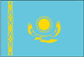
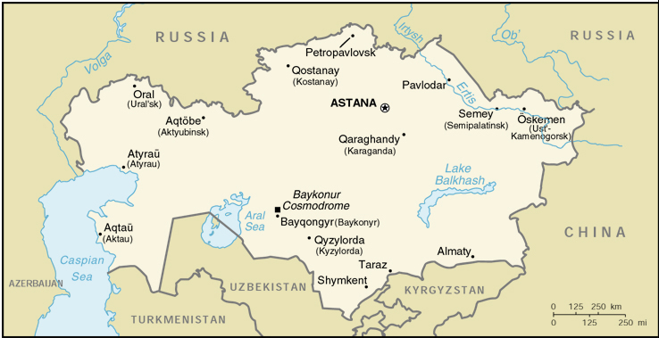

{kind=link}


| Kazakhstan |  |
|
|  | |
| Introduction |
Background: During the 1950s and 1960s Soviet citizens were urged to help settle the "New Lands" of the Kazakh Soviet Socialist Republic. The influx of immigrants (mostly Russians, but including some deported minority nationalities) skewed the ethnic mixture and enabled non-Kazakhs to outnumber natives. Independence has caused many of these newcomers to emigrate. Current issues include: resolving ethnic differences; speeding up market reforms; establishing stable relations with Russia, China, and other foreign powers; and developing and expanding the country's abundant energy resources.
| Geography |
Location: Central Asia, northwest of China
Geographic coordinates: 48 00 N, 68 00 E
Map references: Commonwealth of Independent States
Area:
total:
2,717,300 sq km
land:
2,669,800 sq km
water:
47,500 sq km
Area - comparative: slightly less than four times the size of Texas
Land boundaries:
total:
12,012 km
border countries:
China 1,533 km, Kyrgyzstan 1,051 km, Russia 6,846 km, Turkmenistan 379 km, Uzbekistan 2,203 km
Coastline:
0 km (landlocked)
note:
Kazakhstan borders the Aral Sea, now split into two bodies of water (1,070 km), and the Caspian Sea (1,894 km)
Maritime claims: none (landlocked)
Climate: continental, cold winters and hot summers, arid and semiarid
Terrain: extends from the Volga to the Altai Mountains and from the plains in western Siberia to oases and desert in Central Asia
Elevation extremes:
lowest point:
Vpadina Kaundy -132 m
highest point:
Khan Tangiri Shyngy (Pik Khan-Tengri) 6,995 m
Natural resources: major deposits of petroleum, natural gas, coal, iron ore, manganese, chrome ore, nickel, cobalt, copper, molybdenum, lead, zinc, bauxite, gold, uranium
Land use:
arable land:
12%
permanent crops:
11%
permanent pastures:
57%
forests and woodland:
4%
other:
16% (1996 est.)
Irrigated land: 22,000 sq km (1996 est.)
Natural hazards: earthquakes in the south, mud slides around Almaty
Environment - current issues: radioactive or toxic chemical sites associated with its former defense industries and test ranges are found throughout the country and pose health risks for humans and animals; industrial pollution is severe in some cities; because the two main rivers which flowed into the Aral Sea have been diverted for irrigation, it is drying up and leaving behind a harmful layer of chemical pesticides and natural salts; these substances are then picked up by the wind and blown into noxious dust storms; pollution in the Caspian Sea; soil pollution from overuse of agricultural chemicals and salination from poor infrastructure and wasteful irrigation practices
Environment - international agreements:
party to:
Biodiversity, Climate Change, Desertification, Endangered Species, Ozone Layer Protection, Ship Pollution
signed, but not ratified:
Climate Change-Kyoto Protocol
Geography - note: landlocked
| People |
Population: 16,733,227 (July 2000 est.)
Age structure:
0-14 years:
27% (male 2,332,284; female 2,260,730)
15-64 years:
65% (male 5,320,938; female 5,638,710)
65 years and over:
8% (male 398,225; female 782,340) (2000 est.)
Population growth rate: -0.05% (2000 est.)
Birth rate: 16.78 births/1,000 population (2000 est.)
Death rate: 10.56 deaths/1,000 population (2000 est.)
Net migration rate: -6.7 migrant(s)/1,000 population (2000 est.)
Sex ratio:
at birth:
1.05 male(s)/female
under 15 years:
1.03 male(s)/female
15-64 years:
0.94 male(s)/female
65 years and over:
0.51 male(s)/female
total population:
0.93 male(s)/female (2000 est.)
Infant mortality rate: 59.39 deaths/1,000 live births (2000 est.)
Life expectancy at birth:
total population:
63.19 years
male:
57.73 years
female:
68.93 years (2000 est.)
Total fertility rate: 2.03 children born/woman (2000 est.)
Nationality:
noun:
Kazakhstani(s)
adjective:
Kazakhstani
Ethnic groups: Kazakh (Qazaq) 46%, Russian 34.7%, Ukrainian 4.9%, German 3.1%, Uzbek 2.3%, Tatar 1.9%, other 7.1% (1996)
Religions: Muslim 47%, Russian Orthodox 44%, Protestant 2%, other 7%
Languages: Kazakh (Qazaq, state language) 40%, Russian (official, used in everyday business) 66%
Literacy:
definition:
age 15 and over can read and write
total population:
98%
male:
99%
female:
96% (1989 est.)
| Government |
Country name:
conventional long form:
Republic of Kazakhstan
conventional short form:
Kazakhstan
local long form:
Qazaqstan Respublikasy
local short form:
none
former:
Kazakh Soviet Socialist Republic
Data code: KZ
Government type: republic
Capital:
Astana
note:
the government moved from Almaty to Astana in December 1998
Administrative divisions:
14 oblystar (singular - oblysy) and 3 cities (qala, singular - qalasy)*; Almaty, Almaty*, Aqmola (Astana), Aqtobe, Astana*, Atyrau, Batys Qazaqstan (Oral), Bayqongyr*, Mangghystau (Aqtau; formerly Shevchenko), Ongtustik Qazaqstan (Shymkent), Pavlodar, Qaraghandy, Qostanay, Qyzylorda, Shyghys Qazaqstan (Oskemen; formerly Ust'-Kamenogorsk), Soltustik Qazaqstan (Petropavl), Zhambyl (Taraz; formerly Dzhambul)
note:
administrative divisions have the same names as their administrative centers (exceptions have the administrative center name following in parentheses); in 1995 the Governments of Kazakhstan and Russia entered into an agreement whereby Russia would lease for a period of 20 years an area of 6,000 sq km enclosing the Bayqongyr (Baykonur) space launch facilities and the city of Bayqongyr (formerly Leninsk)
Independence: 16 December 1991 (from the Soviet Union)
National holiday: Day of the Republic, 25 October (1990) (date on which Kazakhstan declared its sovereignty)
Constitution: adopted by national referendum 30 August 1995; first post-independence constitution was adopted 28 January 1993
Legal system: based on civil law system
Suffrage: 18 years of age; universal
Executive branch:
chief of state:
President Nursultan A. NAZARBAYEV (chairman of the Supreme Soviet from 22 February 1990, elected president 1 December 1991)
head of government:
Prime Minister Kazymzhomart TOKAYEV (since 2 October 1999)
cabinet:
Council of Ministers appointed by the president
elections:
president elected by popular vote for a seven-year term; election last held 10 January 1999, a year before it was previously scheduled (next to be held NA 2006); note - President NAZARBAYEV's previous term had been extended to 2000 by a nationwide referendum held 30 April 1995; prime minister and first deputy prime minister appointed by the president
election results:
Nursultan A. NAZARBAYEV elected president; percent of vote - Nursultan A. NAZARBAYEV 79.8%, Serikbolsyn ABDILDIN 11.7%, Gani KASYMOV 4.6%
note:
President NAZARBAYEV expanded his presidential powers by decree: only he can initiate constitutional amendments, appoint and dismiss the government, dissolve Parliament, call referenda at his discretion, and appoint administrative heads of regions and cities
Legislative branch:
bicameral Parliament consists of the Senate (47 seats; 7 senators are appointed by the president; other members are popularly elected, two from each oblast and Almaty, to serve six-year terms) and the Majilis (67 seats; the addition of 10 "Party List" seats brings the total to 77; members are popularly elected to serve five-year terms); note - with the oblasts being reduced to 14, the Senate will eventually be reduced to 37; a number of Senate seats come up for reelection every two years
elections:
Senate - (indirect) last held 17 September 1999 (next to be held NA 2001); Majilis - last held 10 October 1999 (next to be held NA 2004)
election results:
Senate - percent of vote by party - NA; seats by party - NA; 16 seats up for election in 1999, candidates nominated by local councils; Majilis - percent of vote by party - NA; seats by party - Otan 25, Civic Party 10, Communist Party 3, Agrarian Party 3, People's Cooperative Party 1, independents 32, 3 seats unaccounted for
note - most independent candidates are affiliated with parastatal enterprises and other pro-government institutions
Judicial branch: Supreme Court (44 members); Constitutional Council (7 members)
Political parties and leaders: Agrarian Party [Romin MADENOV]; Alash [Soverkazhy AKATAYEV]; AZAMAT Movement [Petr SVOIK, Murat AUEZOV, and Galym ABILSIITOV, cochairmen]; Civic Party [Azat PERUASHEV, first secretary]; Communist Party or KPK [Serikbolsyn ABDILDIN, first secretary]; Forum of Democratic Forces [leader NA]; Labor and Workers Movement [Madel ISMAILOV, chairman]; Orleu Movement [Seidakhmet KUTTYKADAM]; Otan [Sergei TERESCHENKO, chairman]; Pensioners Movement or Pokoleniye [Irina SAVOSTINA, chairwoman]; People's Congress of Kazakhstan or NKK [Olzhas SULEIMENOV, chairman]; People's Cooperative Party [Umirzak SARSENOV]; Republican People's Party of Kazakhstan [Akezhan KAZHEGELDIN]
Political pressure groups and leaders: Kazakhstan International Bureau on Human Rights [Yevgeniy ZHOVTIS, executive director]
International organization participation: AsDB, CCC, CIS, EAPC, EBRD, ECE, ECO, ESCAP, FAO, IAEA, IBRD, ICAO, IDA, IDB, IFAD, IFC, ILO, IMF, IMO, Intelsat, Interpol, IOC, IOM (observer), ISO, ITU, NAM (observer), OAS (observer), OIC, OPCW, OSCE, PFP, UN, UNCTAD, UNESCO, UPU, WFTU, WHO, WIPO, WMO, WToO, WTrO (applicant)
Diplomatic representation in the US:
chief of mission:
Ambassador Bolat K. NURGALIYEV
chancery:
1401 16th Street, NW, Washington, DC 20036
telephone:
[1] (202) 232-5488
FAX:
[1] (202) 232-5845
consulate(s):
New York
Diplomatic representation from the US:
chief of mission:
Ambassador Richard H. JONES
embassy:
99/97A Furmanova Street, Almaty, Republic of Kazakhstan 480091
mailing address:
American Embassy Almaty, Department of State, Washington, DC 20521-7030
telephone:
[7] (3272) 63-39-21, 63-13-75, 50-76-23
FAX:
[7] (3272) 63-38-83
Flag description: sky blue background representing the endless sky and a gold sun with 32 rays soaring above a golden steppe eagle in the center; on the hoist side is a "national ornamentation" in gold
| Economy |
Economy - overview: Kazakhstan, the second largest of the former Soviet republics in territory, possesses enormous untapped fossil fuel reserves as well as plentiful supplies of other minerals and metals. It also has considerable agricultural potential with its vast steppe lands accommodating both livestock and grain production. Kazakhstan's industrial sector rests on the extraction and processing of these natural resources and also on a relatively large machine building sector specializing in construction equipment, tractors, agricultural machinery, and some defense items. The breakup of the USSR and the collapse of demand for Kazakhstan's traditional heavy industry products have resulted in a sharp contraction of the economy since 1991, with the steepest annual decline occurring in 1994. In 1995-97 the pace of the government program of economic reform and privatization quickened, resulting in a substantial shifting of assets into the private sector. The December 1996 signing of the Caspian Pipeline Consortium agreement to build a new pipeline from western Kazakhstan's Tengiz oil field to the Black Sea increases prospects for substantially larger oil exports in several years. Kazakhstan's economy turned downward in 1998 with a 2.5% decline in GDP growth due to slumping oil prices and the August financial crisis in Russia. A bright spot in 1999 was the recovery of international oil prices, which, combined with a well-timed tenge devaluation and a bumper grain harvest, pulled the economy out of recession.
GDP: purchasing power parity - $54.5 billion (1999 est.)
GDP - real growth rate: 1.7% (1999 est.)
GDP - per capita: purchasing power parity - $3,200 (1999 est.)
GDP - composition by sector:
agriculture:
10%
industry:
30%
services:
60% (1999 est.)
Population below poverty line: 35% (1999 est.)
Household income or consumption by percentage share:
lowest 10%:
3.1%
highest 10%:
24.9% (1993)
Inflation rate (consumer prices): 8.3% (1999 est.)
Labor force: 8.8 million (1997)
Labor force - by occupation: industry 27%, agriculture and forestry 23%, other 50% (1996)
Unemployment rate: 13.7% (1998 est.)
Budget:
revenues:
$3.1 billion
expenditures:
$3.6 billion, including capital expenditures of $NA (1999 est.)
Industries: oil, coal, iron ore, manganese, chromite, lead, zinc, copper, titanium, bauxite, gold, silver, phosphates, sulfur, iron and steel, nonferrous metal, tractors and other agricultural machinery, electric motors, construction materials
Industrial production growth rate: 2.2% (1998 est.)
Electricity - production: 49.299 billion kWh (1998)
Electricity - production by source:
fossil fuel:
87.73%
hydro:
12.07%
nuclear:
0.2%
other:
0% (1998)
Electricity - consumption: 48.822 billion kWh (1998)
Electricity - exports: 400 million kWh (1998)
Electricity - imports: 3.374 billion kWh (1998)
Agriculture - products: grain (mostly spring wheat), cotton; wool, livestock
Exports: $5.2 billion (1999 est.)
Exports - commodities: oil 40%, ferrous and nonferrous metals, machinery, chemicals, grain, wool, meat, coal
Exports - partners: EU 32%, China 29%, Russia 29% (1998)
Imports: $4.8 billion (1999 est.)
Imports - commodities: machinery and parts, industrial materials, oil and gas, vehicles
Imports - partners: Russia 39%, Ukraine, US, Uzbekistan, Turkey, UK, Germany, South Korea (1998)
Debt - external: $7.9 billion (1999 est.)
Economic aid - recipient: $409.6 million (1995)
Currency: 1 Kazakhstani tenge = 100 tiyn
Exchange rates: tenges per US$1 - 139.02 (January 2000), 119.52 (1999), 78.30 (1998), 75.44 (1997), 67.30 (1996), 60.95 (1995)
Fiscal year: calendar year
| Communications |
Telephones - main lines in use: 1.963 million (1995)
Telephones - mobile cellular: 4,600 (1995)
Telephone system:
service is poor; equipment antiquated
domestic:
intercity by landline and microwave radio relay; mobile cellular systems are available in most of Kazakhstan
international:
international traffic with other former Soviet republics and China carried by landline and microwave radio relay; with other countries by satellite and by the Trans-Asia-Europe (TAE) fiber-optic cable; satellite earth stations - 2 Intelsat
Radio broadcast stations: AM 60, FM 17, shortwave 9 (1998)
Radios: 6.47 million (1997)
Television broadcast stations: 12 (plus nine repeaters) (1998)
Televisions: 3.88 million (1997)
Internet Service Providers (ISPs): 83 (Kazakhstan and Russia) (1999)
| Transportation |
Railways:
total:
14,400 km in common carrier service; does not include industrial lines
broad gauge:
14,400 km 1.520-m gauge (3,299 km electrified) (1997)
Highways:
total:
119,390 km
paved:
103,272 km
unpaved:
16,118 km (1998 est.)
Waterways: 3,900 km on the Syrdariya (Syr Darya) and Ertis (Irtysh)
Pipelines: crude oil 2,850 km; refined products 1,500 km; natural gas 3,480 km (1992)
Ports and harbors: Aqtau (Shevchenko), Atyrau (Gur'yev), Oskemen (Ust-Kamenogorsk), Pavlodar, Semey (Semipalatinsk)
Airports: 10 (1997 est.)
Airports - with paved runways:
total:
9
over 3,047 m:
4
2,438 to 3,047 m:
3
1,524 to 2,437 m:
2 (1997 est.)
Airports - with unpaved runways:
total:
1
914 to 1,523 m:
1 (1997 est.)
| Military |
Military branches: General Purpose Forces (Army), Air Force, Border Guards, Navy, Republican Guard
Military manpower - military age: 18 years of age
Military manpower - availability:
males age 15-49:
4,477,455 (2000 est.)
Military manpower - fit for military service:
males age 15-49:
3,572,688 (2000 est.)
Military manpower - reaching military age annually:
males:
158,838 (2000 est.)
Military expenditures - dollar figure: $322 million (FY99)
Military expenditures - percent of GDP: 1.5% (FY99)
| Transnational Issues |
Disputes - international: Caspian Sea boundaries are not yet determined among Azerbaijan, Iran, Kazakhstan, Russia, and Turkmenistan; Russia leases approximately 6,000 sq km of territory enclosing the Baykonur Cosmodrome
Illicit drugs: significant illicit cultivation of cannabis and limited cultivation of opium poppy and ephedra (for the drug ephedrone); limited government eradication program; cannabis consumed largely in the CIS; used as transshipment point for illicit drugs to Russia, North America, and Western Europe from Southwest Asia